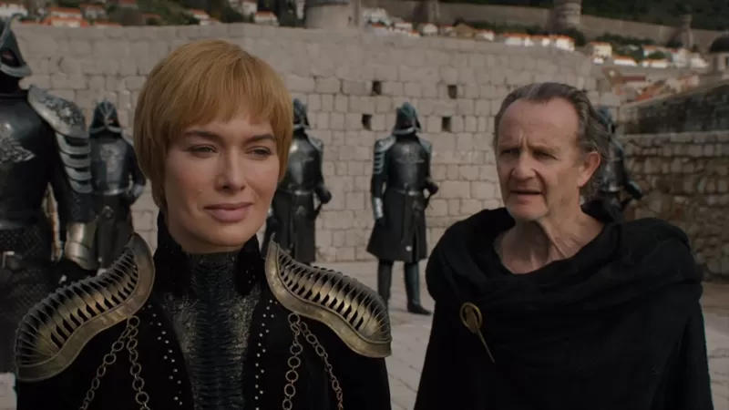

Матір драконів

"Моя улюблениця - королева Дейенеріс. Я отримую задоволення вже від того, що бачу її на екрані".
"Було кілька сцен з драконами - я з захопленням дивився, як Арія та інші герої серіалу, вперше стикаються з нею".
Окрім того, Джорджу Александру дуже цікаво спостерігати, як розвиватимуться стосунки Джона Сноу та Дейенеріс.
У сьомому сезоні вони нарешті об'єднали сили, проте досі не знають те, про що глядачі підозрюють вже дуже давно: вона є його тіткою.
"Там була сцена, де вони перебувають у крипті Вінтерфелу і він на щось уважно дивиться - я майже впевнений, що на свою маму".
Серсея вагітна?
"Мені цікаво поглянути, як Серсея буде поводитись, коли залишиться сама", - каже Александр.
"Навколо неї завжди було повно людей - звісно, поруч із нею й досі залишаються Квіберн і Гора".
У сьомому сезоні, Серсея сказала своєму брату Джеймі, що вона вагітна - перед тим, як він залишив її, аби вирушити на війну з білими ходоками.
"Це була надважлива річ для останнього сезону. Чи віримо ми, що Серсея каже правду?".
"Думаю, єдиний, хто може покінчити з Серсеєю - це Джеймі. Для неї опинитися перед кінчиком його меча було б гірко-солодким фіналом".
"Я знаю смерть"
Арія Старк, роль якої виконує Мейсі Вільямс, - перша, кого ви бачите у трейлері.
В кінці попереднього сезону вона повернулася до Вінтерфела і возз'єдналася зі своїм братом Браном і Сансою Старк, а Мізинець став останнім, кого вона вбила.
"Я знаю смерть. В неї багато облич. Не можу дочекатися, коли побачу і ось це", - каже Арія в трейлері.
Джордж Александр вважає, що ця сцена - частина ключової битви між живими і мертвими, яку ми побачимо.
"Чи може бути так, що вона промовляє фразу про смерть перед тим, як її час у цьому шоу завершиться?".
Варіс і його роль у майбутній битві
"Я був дуже радий побачити у трейлері другорядних персонажів - таких як Варіс", - каже Джордж Александр.
Наприкінці минулуого сезону Варіс опиняється у Білій гавані на півночі, готовий до битви з Королем ночі.
"Політика скінчилася. Це вже не та ситуація, коли він може щось комусь нашептати і отримати те, що він хоче".
"Назріває справжня кровопролитна битва, і я хотів би побачити, яку роль Варіс у ній зіграє".
Хто зрештою опиниться на Залізному троні?
У Джорджа Александра є кілька теорій.
"Якщо судити з трейлера, то я зовсім не здивуюся, якщо під кінець сезону не буде вже ніякого Залізного трона".
На його думку кінцівка серіалу, за якої на троні опиниться Дейенеріс чи Джон Сноу, буде занадто банальною.
Я з радістю побачив би на троні, приміром, Сансу - думаю, з неї вийшла б непогана Єлизавета I.
"Втім, зараз важко сказати. Можливо, на троні опиниться Король ночі? Можливо дракон?".